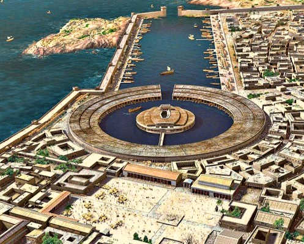

814 av. J.-C. — 146 av. J.-C.
Carthage — L'empire de la Méditerranée
La cité punique qui défia Rome
La Tunisie commence véritablement son histoire avec la fondation de Carthage, vers 814 avant J.-C., par la reine phénicienne Didon — ou Elissa — venue de Tyr, au Liban actuel. Selon la légende, elle négocia avec les populations locales un territoire "aussi grand que ce que peut couvrir une peau de bœuf", puis découpa la peau en fines lanières pour délimiter la colline de Byrsa, sur laquelle elle fit construire la ville.
En quelques siècles, Carthage devint l'une des cités les plus puissantes et les plus riches du monde antique. Maîtresse des routes commerciales maritimes en Méditerranée occidentale, elle contrôlait une grande partie du commerce de l'or, du cuivre, de l'étain et des textiles. À son apogée, la ville comptait plus de 700 000 habitants — une métropole gigantesque pour l'époque — avec ses ports monumentaux, ses temples, ses bibliothèques et ses quartiers résidentiels.
La civilisation punique, héritière de la culture phénicienne, était réputée pour ses marins intrépides, ses marchands habiles et son art délicat. Les Carthaginois inventèrent des techniques agricoles avancées et écrivirent des traités d'agronomie traduits plus tard en latin. Leur alphabet, dérivé du phénicien, est l'ancêtre direct de notre alphabet occidental.
La rivalité avec Rome aboutit aux trois Guerres Puniques, dont la plus célèbre est marquée par le général Hannibal Barca qui traversa les Alpes avec ses éléphants de guerre pour attaquer l'Italie par le nord — un exploit militaire resté légendaire. Finalement, en 146 avant J.-C., Rome rasa Carthage, massacra sa population et répandit du sel sur ses ruines pour que rien n'y pousse jamais.

Personnage clé
Hannibal Barca
247 — 183 av. J.-C.
Général carthaginois considéré comme l'un des plus grands stratèges militaires de l'histoire, Hannibal traversa les Alpes avec 37 éléphants de guerre pour attaquer Rome par le nord. Sa victoire à Cannes en 216 av. J.-C. — où il encercla et anéantit une armée romaine de 80 000 hommes avec seulement 40 000 soldats — reste l'une des manœuvres tactiques les plus étudiées dans les académies militaires du monde entier.
Dates clés

Le saviez-vous ?
Carthage était dotée de deux ports militaires pouvant accueillir jusqu'à 220 navires de guerre. Le port circulaire intérieur, réservé à la flotte militaire, était une prouesse d'ingénierie unique dans le monde antique.
"Carthage doit être détruite."
Caton l'Ancien, sénateur romain — répété à chaque discours